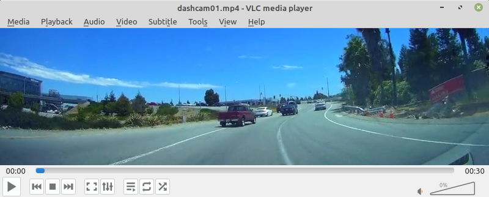

Redis is a fast, in-memory data store, which can be used as a database, cache, streaming engine, and message broker. It is a great way of incorporating deep learning frameworks that are run from within Docker containers, simplifying the dependencies due to decoupling.
wai.annotations has support for the following data domains:
- image classification: sends image, receives JSON with label/probability pairs
- object detection: sends image, receives JSON in OPEX format
- image segmentation: sends image, receives segmented image (indexed PNG or blue-channel PNG)
Docker images#
The following Docker images are available for connecting to the prediction plugins:
-
Image classification
-
Object detection
-
Image segmentation
Object detection example#
In this example we are using a prebuilt yolov5 model (using MS-COCO) to make predictions on the frames that come from a dashcam video, overlay the predictions on the images and display them. For the model and wai.annotations we will be using existing docker containers.
NB: No GPU required.
Data#
Input#

Output#

Preparation#
NB: Place all the downloads in the current directory
- Download the dashcam01.mp4 video from the BoofCV project
- Download the yolo5n.pt model
- Download the coco.yaml data description for the yolo5n model
-
The host machine must have a Redis server instance running. Two options:
- Install it natively via
sudo apt-get install redis(and then restart it withsudo systemctl restart redis) - Spin up a docker container with:
docker run --net=host --name redis-server -d redis
- Install it natively via
Yolov5 model#
The following command launches a Yolov5 model via the container's yolov5_predict_redis command,
running on the CPU:
docker run \
--net=host -u $(id -u):$(id -g) \
-v `pwd`:/workspace \
-it waikatodatamining/pytorch-yolov5:2022-01-21_cpu \
yolov5_predict_redis \
--redis_in images \
--redis_out predictions \
--model /workspace/yolov5n.pt \
--data /workspace/coco.yaml
wai.annotations#
The following wai.annotations pipeline loads every 2nd frame from the dashcam01.mp4 video, obtains predictions from the Yolov5 model (using the Redis backend), overlays the predictions and then displays them:
docker run -u $(id -u):$(id -g) \
--net=host \
--env="DISPLAY" --volume="/tmp/.X11-unix:/tmp/.X11-unix:rw" \
-v `pwd`:/workspace \
-it waikatoufdl/wai.annotations:0.7.6 \
wai-annotations convert \
from-video-file-od \
-i /workspace/dashcam01.mp4 \
-n 2 \
redis-predict-od \
--channel-out images \
--channel-in predictions \
--timeout 1.0 \
add-annotation-overlay-od \
--outline-alpha 255 \
--outline-thickness 1 \
--fill \
--fill-alpha 128 \
--vary-colors \
--font-size 10 \
--text-format "{label}: {score}" \
--text-placement T,L \
--force-bbox \
image-viewer-od \
--size 800,224 \
--delay 1
Video#
The above instructions also as a video: